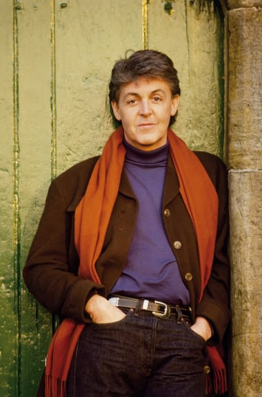

Paul McCartney
Born in Liverpool, McCartney taught himself piano, guitar and songwriting as a teenager, having been influenced by his father, a jazz player, and rock and roll performers such as Little Richard and Buddy Holly. He began his career when he joined Lennon's skiffle group, the Quarrymen, in 1957, which evolved into the Beatles in 1960. Sometimes called "the cute Beatle", McCartney later involved himself with the London avant-garde and spearheaded the incorporation of experimental aesthetics into the Beatles' studio productions. Starting with the 1967 album Sgt. Pepper's Lonely Hearts Club Band, he gradually became the band's de facto leader, providing the creative impetus for most of their music and film projects. Many of his Beatles songs, including "And I Love Her", "Yesterday", "Eleanor Rigby", and "Blackbird", rank among the most covered songs in history.[5][6] While primarily a bassist with the Beatles, in various songs he played a number of other instruments, including keyboards, guitars, and drums.
After the Beatles disbanded, he debuted as a solo artist with the 1970 album McCartney and formed the band Wings with his first wife, Linda, and Denny Laine. Led by McCartney, Wings was one of the most successful bands of the 1970s, and he wrote or co-wrote their US or UK number-one hits "My Love", "Band on the Run", "Listen to What the Man Said", "Silly Love Songs", and "Mull of Kintyre". He resumed his solo career in 1980 and has toured as a solo artist since 1989. Without Wings, his UK or US number-one hits have included "Uncle Albert/Admiral Halsey" (with Linda), "Coming Up", "Pipes of Peace", "Ebony and Ivory" (with Stevie Wonder), and "Say Say Say" (with Michael Jackson). Beyond music, he has taken part in projects to promote international charities related to such subjects as animal rights, seal hunting, land mines, vegetarianism, poverty, and music education.
McCartney has written or co-written a record 32 songs that have topped the Billboard Hot 100 and, as of 2009, had sales of 25.5 million RIAA-certified units in the US. His honours include two inductions into the Rock and Roll Hall of Fame (as a member of the Beatles in 1988 and as a solo artist in 1999), an Academy Award, a Primetime Emmy Award, 18 Grammy Awards, an appointment as a Member of the Order of the British Empire in 1965 and a knighthood in 1997 for services to music. As of 2020, he is one of the wealthiest musicians in the world, with an estimated fortune of £800 million.
Early life

McCartney was born on 18 June 1942 at Walton Hospital in the Walton area of Liverpool, where his mother, Mary Patricia (née Mohin), had qualified to practise as a nurse. His father, James ("Jim") McCartney, was absent from his son's birth, due to his work as a volunteer firefighter during World War II. Both of his parents were of Irish descent.[8] McCartney has a younger brother, Peter Michael, and a younger stepsister, Ruth, born to his father's second wife, Angie, during her first marriage.[9] Paul and Michael were baptised in their mother's Catholic faith, even though their father was a former Protestant who had turned agnostic. Religion was not emphasised in the household.
According to his biographer Peter Ames Carlin, McCartney's parents came from the "lowest rungs of the working class"[11] but had experienced some upward social mobility during their lifetimes. Before the war, Jim had worked as a salesman for the cotton merchants A. Hannay and Co., having been promoted from his job as a sample boy in their warehouse; when the war broke out, Hannay's was shuttered, and Jim was employed as a lathe turner at Napier's defence engineering works, volunteering for the fire brigade at night.[12] The growing family was rehoused at a flat in Knowsley in 1944 and then in a council housing development in Speke in 1946. After the war, Jim returned to his job at the cotton merchants with a reduced income. Mary's work as a visiting midwife was much more remunerative.
McCartney attended Stockton Wood Road Primary School in Speke from 1947 until 1949, when he transferred to Joseph Williams Junior School in Belle Vale because of overcrowding at Stockton.[13] In 1953, he was one of only three students out of 90 to pass the 11-Plus exam, meaning he could attend the Liverpool Institute, a grammar school rather than a secondary modern school.[14] In 1954, he met schoolmate George Harrison on the bus from his suburban home in Speke. The two quickly became friends; McCartney later admitted: "I tended to talk down to him because he was a year younger.
Mary McCartney's midwifery paid well, and her earnings enabled them to move into 20 Forthlin Road in Allerton,[17] where they lived until 1964.[18] She rode a bicycle to her patients; McCartney described an early memory of her leaving at "about three in the morning [the] streets ... thick with snow".[19] On 31 October 1956, when McCartney was 14, his mother died of an embolism as a complication of surgery for breast cancer.[20] McCartney's loss later became a connection with John Lennon, whose mother, Julia, died in 1958 when Lennon was 17.
McCartney's father was a trumpet player and pianist who led Jim Mac's Jazz Band in the 1920s. He kept an upright piano in the front room, encouraged his sons to be musical and advised McCartney to take piano lessons. However, McCartney preferred to learn by ear.[22][nb 1] When McCartney was 11, his father encouraged him to audition for the Liverpool Cathedral choir, but he was not accepted. McCartney then joined the choir at St Barnabas' Church, Mossley Hill.[25] McCartney received a nickel-plated trumpet from his father for his fourteenth birthday, but when rock and roll became popular on Radio Luxembourg, McCartney traded it for a £15 Framus Zenith (model 17) acoustic guitar, since he wanted to be able to sing while playing.[26] He found it difficult to play guitar right-handed, but after noticing a poster advertising a Slim Whitman concert and realising that Whitman played left-handed, he reversed the order of the strings.[27] McCartney wrote his first song, "I Lost My Little Girl", on the Zenith, and composed another early tune that would become "When I'm Sixty-Four" on the piano. American rhythm and blues influenced him, and Little Richard was his schoolboy idol; "Long Tall Sally" was the first song McCartney performed in public, at a Butlin's Filey holiday camp talent competition.
1957–1960: The Quarrymen
The Quarrymen (also written as "the Quarry Men") are a British skiffle/rock and roll group, formed by John Lennon in Liverpool in 1956,[2] which evolved into the Beatles in 1960. Originally consisting of Lennon and several schoolfriends, the Quarrymen took their name from a line in the school song of their school, the Quarry Bank High School. Lennon's mother, Julia, taught her son to play the banjo, showed Lennon and Eric Griffiths how to tune their guitars in a similar way to the banjo, and taught them simple chords and songs.
On 6 July 1957, The Quarrymen played at the St. Peter's Church Rose Queen garden fête in Woolton. They first played on the back of a moving flatbed lorry, in a procession of floats that carried the Rose Queen and retiring Rose Queen, Morris dancers, Boy Scouts, Brownies, Girl Guides and Cubs, led by the Band of the Cheshire Yeomanry.[24] At 4:15, they played on a permanent stage in the field behind the church,[25] before a display by the City of Liverpool Police Dogs.[26][27] They were playing "Come Go with Me" when Paul McCartney arrived, and in the Scout hut after the set, Ivan Vaughan introduced McCartney to Lennon, who chatted for a few minutes before the band set up in the church hall for their performance at that evening's "Grand Dance".[28][29] McCartney demonstrated how he tuned his guitar and then sang Eddie Cochran's "Twenty Flight Rock", Gene Vincent's "Be-Bop-a-Lula", and a medley of Little Richard songs.
Vaughan and McCartney left before the evening show which started at 8 o'clock.[31] During the performance, there was an unexpected thunderstorm, which made the lights go out.[32] Bob Molyneux, a young schoolmate from Quarry Bank, recorded part of the performance on his Grundig TK8 portable reel-to-reel tape recorder. The tape included versions of Lonnie Donegan's "Puttin' on the Style" and Elvis' "Baby Let's Play House". In 1963, Molyneux offered the tape to Lennon via Ringo Starr, but Lennon never responded, so Molyneux put the tape in a vault.
As they were walking home after the evening performance, Lennon and Shotton discussed the afternoon encounter with McCartney, and Lennon said that perhaps they should invite McCartney to join the band. Two weeks later, Shotton encountered McCartney cycling through Woolton, and conveyed Lennon's casual invitation for him to join the Quarrymen, and Vaughan also invited McCartney to join.[26] McCartney said he would join after Scout camp in Hathersage, Derbyshire, and a holiday with his family at the Butlin's holiday camp in Filey, North Yorkshire.[34][35] Shotton and Davis both left the Quarrymen in August, feeling that the group was moving away from skiffle and towards rock, leaving their instruments superfluous.[36][35] When McCartney returned from holiday, he began rehearsing with the Quarrymen, playing songs such as "Bye Bye Love" (The Everly Brothers) and "All Shook Up", which Lennon and the group had been trying to learn, without success.
McCartney made his debut with the band on 18 October 1957 at a Conservative Club social held at the New Clubmoor Hall in the Norris Green section of Liverpool.[38][34] Lennon and McCartney wore cream-coloured sports jackets, which were paid for by the whole group—Walley collected half a crown per week from each member until they were paid for — and the others wore white shirts with tassels and black bootlace ties.[38] To the irritation of the other group members, McCartney endlessly practised the lead guitar intro to "Raunchy". The Quarrymen continued to play sparse gigs throughout the autumn of 1957, mostly for local promoter Charlie McBain.[39] During this period, the group almost entirely excised skiffle from their repertoire, focusing on covers of songs by rock and roll singers such as Elvis Presley, Carl Perkins, Little Richard, and Larry Williams, and the Quarrymen's sound increasingly relied on harmony singing between Lennon and McCartney.[40] An extremely important influence for them at the time was Buddy Holly and his group the Crickets.[41] Around this time, Lennon and McCartney both started writing songs influenced by Holly – Lennon's "Hello Little Girl" and McCartney's "I Lost My Little Girl" – and both were impressed with each other's efforts.[42] The two young men began writing together.
1960–1970: The Beatles
In 1961, Sutcliffe left the band, and McCartney became their bass player. It is contradicted as to whether he joined reluctantly or actively sought out the role.[34][35] While in Hamburg, they recorded professionally for the first time and were credited as the Beat Brothers, who were the backing band for English singer Tony Sheridan on the single "My Bonnie".[36] This resulted in attention from Brian Epstein, who was a key figure in their subsequent development and success. He became their manager in January 1962.[37] Ringo Starr replaced Best in August, and the band had their first hit, "Love Me Do", in October, becoming popular in the UK in 1963, and in the US a year later. The fan hysteria became known as "Beatlemania", and the press sometimes referred to McCartney as the "cute Beatle".[38][nb 2] McCartney co-wrote (with Lennon) several of their early hits, including "I Saw Her Standing There", "She Loves You", "I Want to Hold Your Hand" (1963) and "Can't Buy Me Love" (1964).
In August 1965, the Beatles released the McCartney composition "Yesterday", featuring a string quartet. Included on the Help! LP, the song was the group's first recorded use of classical music elements and their first recording that involved only a single band member.[41] "Yesterday" became one of the most covered songs in popular music history.[42] Later that year, during recording sessions for the album Rubber Soul, McCartney began to supplant Lennon as the dominant musical force in the band. Musicologist Ian MacDonald wrote, "from [1965] ... [McCartney] would be in the ascendant not only as a songwriter, but also as instrumentalist, arranger, producer, and de facto musical director of the Beatles."[43] Critics described Rubber Soul as a significant advance in the refinement and profundity of the band's music and lyrics.[44] Considered a high point in the Beatles catalogue, both Lennon and McCartney said they had written the music for the song "In My Life".[45] McCartney said of the album, "we'd had our cute period, and now it was time to expand."[46] Recording engineer Norman Smith stated that the Rubber Soul sessions exposed indications of increasing contention within the band: "the clash between John and Paul was becoming obvious ... [and] as far as Paul was concerned, George [Harrison] could do no right—Paul was absolutely finicky.
In 1966, the Beatles released the album Revolver. Featuring sophisticated lyrics, studio experimentation, and an expanded repertoire of musical genres ranging from innovative string arrangements to psychedelic rock, the album marked an artistic leap for the Beatles.[48] The first of three consecutive McCartney A-sides, the single "Paperback Writer" preceded the LP's release.[49] The Beatles produced a short promotional film for the song, and another for its B-side, "Rain". The films, described by Harrison as "the forerunner of videos", aired on The Ed Sullivan Show and Top of the Pops in June 1966.[50] Revolver also included McCartney's "Eleanor Rigby", which featured a string octet. According to Gould, the song is "a neoclassical tour de force ... a true hybrid, conforming to no recognizable style or genre of song".[51] Except for some backing vocals, the song included only McCartney's lead vocal and the strings arranged by producer George Martin.
The band gave their final commercial concert at the end of their 1966 US tour.[54] Later that year, McCartney completed his first musical project independent of the group—a film score for the UK production The Family Way. The score was a collaboration with Martin, who used two McCartney themes to write thirteen variations. The soundtrack failed to chart, but it won McCartney an Ivor Novello Award for Best Instrumental Theme.
Upon the end of the Beatles' performing career, McCartney sensed unease in the band and wanted them to maintain creative productivity. He pressed them to start a new project, which became Sgt. Pepper's Lonely Hearts Club Band, widely regarded as rock's first concept album.[56] McCartney was inspired to create a new persona for the group, to serve as a vehicle for experimentation and to demonstrate to their fans that they had musically matured. He invented the fictional band of the album's title track.[57] As McCartney explained, "We were fed up with being the Beatles. We really hated that fucking four little mop-top approach. We were not boys we were men ... and [we] thought of ourselves as artists rather than just performers.
Starting in November 1966, the band adopted an experimental attitude during recording sessions for the album.[59] Their recording of "A Day in the Life" required a forty-piece orchestra, which Martin and McCartney took turns conducting.[60] The sessions produced the double A-side single "Strawberry Fields Forever"/"Penny Lane" in February 1967, and the LP followed in June.[39][nb 4] Based on an ink drawing by McCartney, the LP's cover included a collage designed by pop artists Peter Blake and Jann Haworth, featuring the Beatles in costume as the Sgt. Pepper's Lonely Hearts Club Band, standing with a host of celebrities.[62] The cover piqued a frenzy of analysis.
Epstein's death in August 1967 created a void, which left the Beatles perplexed and concerned about their future.[65] McCartney stepped in to fill that void and gradually became the de facto leader and business manager of the group that Lennon had once led.[66] In his first creative suggestion after this change of leadership, McCartney proposed that the band move forward on their plans to produce a film for television, which was to become Magical Mystery Tour. According to Beatles historian Mark Lewisohn, the project was "an administrative nightmare throughout".[67] McCartney largely directed the film, which brought the group their first unfavourable critical response.[68] However, the film's soundtrack was more successful. It was released in the UK as a six-track double extended play disc (EP) and as an identically titled LP in the US, filled out with five songs from the band's recent singles.[39] The only Capitol compilation later included in the group's official canon of studio albums, the Magical Mystery Tour LP achieved $8 million in sales within three weeks of its release, higher initial sales than any other Capitol LP up to that point.
The Beatles' animated film Yellow Submarine, loosely based on the imaginary world evoked by McCartney's 1966 composition, premiered in July 1968. Though critics admired the film for its visual style, humour and music, the soundtrack album issued six months later received a less enthusiastic response.[70] By late 1968, relations within the band were deteriorating. The tension grew during the recording of their eponymous double album, also known as the "White Album".[71][nb 5] Matters worsened the following year during the Let It Be sessions, when a camera crew filmed McCartney lecturing the group: "We've been very negative since Mr. Epstein passed away ... we were always fighting [his] discipline a bit, but it's silly to fight that discipline if it's our own".
In March 1969, McCartney married his first wife, Linda Eastman, and in August, the couple had their first child, Mary, named after his late mother.[74] Abbey Road was the band's last recorded album, and Martin suggested "a continuously moving piece of music", urging the group to think symphonically.[75] McCartney agreed, but Lennon did not. They eventually compromised, agreeing to McCartney's suggestion: an LP featuring individual songs on side one and a long medley on side two.[75] In October 1969, a rumour surfaced that McCartney had died in a car crash in 1966 and was replaced by a lookalike, but this was quickly refuted when a November Life magazine cover featured him and his family, accompanied by the caption "Paul is still with us".
John Lennon privately left the Beatles in September 1969, though agreed not to go public with the information to not jeopardise ongoing business negotiations. McCartney was in the midst of business disagreements with his bandmates, largely concerning Allen Klein's management of the group, when he announced his own departure from the group on 10 April 1970.[77] He filed a suit for the band's formal dissolution on 31 December 1970, and in March 1971 the court appointed a receiver to oversee the finances of the Beatles' company Apple Corps. An English court legally dissolved the Beatles' partnership on 9 January 1975, though sporadic lawsuits against their record company EMI, Klein, and each other persisted until 1989.
1970–1981: Wings
As the Beatles were breaking up in 1969–70, McCartney fell into a depression. His wife helped him pull out of that condition by praising his work as a songwriter and convincing him to continue writing and recording. In her honour, he wrote "Maybe I'm Amazed", explaining that with the Beatles breaking up, "that was my feeling: Maybe I'm amazed at what's going on ... Maybe I'm a man and maybe you're the only woman who could ever help me; Baby won't you help me understand ... Maybe I'm amazed at the way you pulled me out of time, hung me on the line, Maybe I'm amazed at the way I really need you." He added that "every love song I write is for Linda.
In 1970, McCartney continued his musical career with his first solo release, McCartney, a US number-one album. Apart from some vocal contributions from Linda, McCartney is a one-man album, with McCartney providing compositions, instrumentation and vocals.[85][nb 8] In 1971, he collaborated with Linda and drummer Denny Seiwell on a second album, Ram. A UK number one and a US top five, Ram included the co-written US number-one hit single "Uncle Albert/Admiral Halsey".[87] Later that year, ex-Moody Blues guitarist Denny Laine joined the McCartneys and Seiwell to form the band Wings. McCartney had this to say on the group's formation: "Wings were always a difficult idea ... any group having to follow [the Beatles'] success would have a hard job ... I found myself in that very position. However, it was a choice between going on or finishing, and I loved music too much to think of stopping."[88][nb 9] In September 1971, the McCartneys' daughter Stella was born, named in honour of Linda's grandmothers, both of whom were named Stella.
Following the addition of guitarist Henry McCullough, Wings' first concert tour began in 1972 with a debut performance in front of an audience of seven hundred at the University of Nottingham. Ten more gigs followed as they travelled across the UK in a van during an unannounced tour of universities, during which the band stayed in modest accommodation and received pay in coinage collected from students, while avoiding Beatles songs during their performances.[91] McCartney later said, "The main thing I didn't want was to come on stage, faced with the whole torment of five rows of press people with little pads, all looking at me and saying, 'Oh well, he is not as good as he was.' So we decided to go out on that university tour which made me less nervous ... by the end of that tour I felt ready for something else, so we went into Europe."[92] During the seven-week, 25-show Wings Over Europe Tour, the band played almost solely Wings and McCartney solo material: the Little Richard cover "Long Tall Sally" was the only song that the Beatles had previously recorded. McCartney wanted the tour to avoid large venues; most of the small halls they played had capacities of fewer than 3,000 people.
In March 1973, Wings achieved their first US number-one single, "My Love", included on their second LP, Red Rose Speedway, a US number one and UK top five.[94][nb 10] McCartney's collaboration with Linda and former Beatles producer Martin resulted in the song "Live and Let Die", which was the theme song for the James Bond film of the same name. Nominated for an Academy Award, the song reached number two in the US and number nine in the UK. It also earned Martin a Grammy for his orchestral arrangement.[95] Music professor and author Vincent Benitez described the track as "symphonic rock at its best"
After the departure of McCullough and Seiwell in 1973, the McCartneys and Laine recorded Band on the Run. The album was the first of seven platinum Wings LPs.[98] It was a US and UK number one, the band's first to top the charts in both countries and the first ever to reach Billboard magazine's charts on three separate occasions. One of the best-selling releases of the decade, it remained on the UK charts for 124 weeks. Rolling Stone named it one of the Best Albums of the Year for 1973, and in 1975, Paul McCartney and Wings won the Grammy Award for Best Pop Vocal Performance for the song "Band on the Run", and Geoff Emerick won the Grammy for Best Engineered Recording for the album.[99][nb 12] In 1974, Wings achieved a second US number-one single with the title track.[101] The album also included the top-ten hits "Jet" and "Helen Wheels", and earned the 418th spot on Rolling Stone's list of the 500 Greatest Albums of All Time.[102] In 1974, McCartney hired guitarist Jimmy McCulloch and drummer Geoff Britton to replace McCullough and Seiwell. Britton subsequently quit during recording sessions in 1975 and was replaced by Joe English.
In September 1977, the McCartneys had their third child, a son they named James. In November, the Wings song "Mull of Kintyre", co-written with Laine, was quickly becoming one of the best-selling singles in UK chart history.[108] The most successful single of McCartney's solo career, it achieved double the sales of the previous record holder, "She Loves You", and went on to sell 2.5 million copies and hold the UK sales record until the 1984 charity single, "Do They Know It's Christmas?
In 1980, McCartney released his second solo LP, the self-produced McCartney II, which peaked at number one in the UK and number three in the US. As with his first album, he composed and performed it alone.[115] The album contained the song "Coming Up", the live version of which, recorded in Glasgow, Scotland, in 1979 by Wings, became the group's last number-one hit.[116] By 1981, McCartney felt he had accomplished all he could creatively with Wings and decided he needed a change. The group discontinued in April 1981 after Laine quit following disagreements over royalties and salaries.
1982-2009
In 1982, McCartney collaborated with Stevie Wonder on the Martin-produced number-one hit "Ebony and Ivory", included on McCartney's Tug of War LP, and with Michael Jackson on "The Girl Is Mine" from Thriller.[121][nb 18] "Ebony and Ivory" was McCartney's record 28th single to hit number one on the Billboard 100.[123] The following year, he and Jackson worked on "Say Say Say", McCartney's most recent US number one as of 2014. McCartney earned his latest UK number one as of 2014 with the title track of his LP release that year, "Pipes of Peace".
McCartney collaborated with Eric Stewart on Press to Play (1986), with Stewart co-writing more than half the songs on the LP.[132][nb 21] In 1988, McCartney released Снова в СССР, initially available only in the Soviet Union, which contained eighteen covers; recorded over the course of two days.[134] In 1989, he joined forces with fellow Merseysiders Gerry Marsden and Holly Johnson to record an updated version of "Ferry Cross the Mersey", for the Hillsborough disaster appeal fund.[135][nb 22] That same year, he released Flowers in the Dirt; a collaborative effort with Elvis Costello that included musical contributions from Gilmour and Nicky Hopkins.[137][nb 23] McCartney then formed a band consisting of himself and Linda, with Hamish Stuart and Robbie McIntosh on guitars, Paul "Wix" Wickens on keyboards and Chris Whitten on drums.[139] In September 1989, they launched the Paul McCartney World Tour, his first in over a decade. During the tour, McCartney performed for the largest paying stadium audience in history on 21 April 1990, when 184,000 people attended his concert at Maracanã Stadium in Rio de Janeiro, Brazil.[140] That year, he released the triple album Tripping the Live Fantastic, which contained selected performances from the tour.
In 1991, McCartney performed a selection of acoustic-only songs on MTV Unplugged and released a live album of the performance titled Unplugged (The Official Bootleg).[148][nb 26] During the 1990s, McCartney collaborated twice with Youth of Killing Joke as the musical duo "the Fireman". The two released their first electronica album together, Strawberries Oceans Ships Forest, in 1993.[150] McCartney released the rock album Off the Ground in 1993.[151][nb 27] The subsequent New World Tour followed, which led to the release of the Paul Is Live album later that year.
Starting in 1994, McCartney took a four-year break from his solo career to work on Apple's Beatles Anthology project with Harrison, Starr and Martin. He recorded a radio series called Oobu Joobu in 1995 for the American network Westwood One, which he described as "widescreen radio".[157] Also in 1995, Prince Charles presented him with an Honorary Fellowship of the Royal College of Music—"kind of amazing for somebody who doesn't read a note of music", commented McCartney.
In 2000, he released the electronica album Liverpool Sound Collage with Super Furry Animals and Youth, using the sound collage and musique concrète techniques that had fascinated him in the mid-1960s.[166] He contributed the song "Nova" to a tribute album of classical, choral music called A Garland for Linda (2000), dedicated to his late wife.
In July 2002, McCartney married Heather Mills. In November, on the first anniversary of George Harrison's death, McCartney performed at the Concert for George.[175] He participated in the National Football League's Super Bowl, performing "Freedom" during the pre-game show for Super Bowl XXXVI in 2002 and headlining the halftime show at Super Bowl XXXIX in 2005.[176] The English College of Arms honoured McCartney in 2002 by granting him a coat of arms. His crest, featuring a Liver bird holding an acoustic guitar in its claw, reflects his background in Liverpool and his musical career. The shield includes four curved emblems which resemble beetles' backs. The arms' motto is Ecce Cor Meum, Latin for "Behold My Heart".[177] In 2003, the McCartneys had a child, Beatrice Milly.
In July 2005, he performed at the Live 8 event in Hyde Park, London, opening the show with "Sgt. Pepper's Lonely Hearts Club Band" (with U2) and closing it with "Drive My Car" (with George Michael), "Helter Skelter", and "The Long and Winding Road".[179][nb 35] In September, he released the rock album Chaos and Creation in the Backyard, for which he provided most of the instrumentation.[181][nb 36][nb 37] In 2006, McCartney released the classical work Ecce Cor Meum.[184][nb 38] The rock album Memory Almost Full followed in 2007.[185][nb 39] In 2008, he released his third Fireman album, Electric Arguments.[187][nb 40] Also in 2008, he performed at a concert in Liverpool to celebrate the city's year as European Capital of Culture. In 2009, after a four-year break, he returned to touring and has since performed over 80 shows.[189] More than forty-five years after the Beatles first appeared on American television during The Ed Sullivan Show, he returned to the same New York theatre to perform on Late Show with David Letterman.[190] On 9 September 2009, EMI reissued the Beatles catalogue following a four-year digital remastering effort, releasing a music video game called The Beatles: Rock Band the same day.
2010–present
In 2010, McCartney opened the Consol Energy Center in Pittsburgh, Pennsylvania; it was his first concert in Pittsburgh since 1990 due to the old Civic Arena being deemed unsuitable for McCartney's logistical needs.[193][nb 41] In July 2011, McCartney performed at two sold-out concerts at the new Yankee Stadium. A New York Times review of the first concert reported that McCartney was "not saying goodbye but touring stadiums and playing marathon concerts".[195] McCartney was commissioned by the New York City Ballet, and in September 2011, he released his first score for dance, a collaboration with Peter Martins called Ocean's Kingdom.[196] Also in 2011, McCartney married Nancy Shevell.[197] He released Kisses on the Bottom, a collection of standards, in February 2012, the same month that the National Academy of Recording Arts and Sciences honoured him as the MusiCares Person of the Year, two days prior to his performance at the 54th Annual Grammy Awards.
On 12 December 2012, McCartney performed with three former members of Nirvana (Krist Novoselic, Dave Grohl, and guest member Pat Smear) during the closing act of 12-12-12: The Concert for Sandy Relief, seen by approximately two billion people worldwide.[204] On 28 August 2013, McCartney released the title track of his upcoming studio album New, which came out in October 2013.[205] A primetime entertainment special was taped on 27 January 2014 at the Ed Sullivan Theater with a 9 February 2014 CBS airing. The show featured McCartney and Ringo Starr, and celebrated the legacy of the Beatles and their groundbreaking 1964 performance on The Ed Sullivan Show. The show, titled The Night That Changed America: A Grammy Salute to The Beatles, featured 22 classic Beatles songs as performed by various artists, including McCartney and Starr.
In February 2015, McCartney performed with Paul Simon for the Saturday Night Live 40th Anniversary Special. McCartney and Simon performed the first verse of "I've Just Seen a Face" on acoustic guitars, and McCartney later performed "Maybe I'm Amazed".[218] McCartney shared lead vocals on the Alice Cooper-led Hollywood Vampires supergroup's cover of his song "Come and Get It", which appears on their debut album, released on 11 September 2015.[219] On 10 June 2016, McCartney released the career-spanning collection Pure McCartney.[220] The set includes songs from throughout McCartney's solo career and his work with Wings and the Fireman, and is available in three different formats (2-CD, 4-CD, 4-LP and Digital). The 4-CD version includes 67 tracks, most of which were top-40 hits.[221][222] McCartney appeared in the 2017 adventure film Pirates of the Caribbean: Dead Men Tell No Tales, in a cameo role as Uncle Jack.
McCartney's 18th solo album, McCartney III, was released on 18 December 2020, via Capitol Records.[232][233] An album of "reinterpretations, remixes, and covers" titled McCartney III Imagined was released on 16 April 2021.
McCartney's book The Lyrics: 1956 to the Present was released in November 2021. Described as a "self-portrait in 154 songs", the book is based on conversations McCartney had with the Irish poet Paul Muldoon.[235] The Lyrics was named Book of the Year by both Barnes & Noble and Waterstones.
McCartney's "Got Back" tour ran from 28 April 2022 to 16 June 2022 in the United States, his first in the country since 2019.[238] The tour concluded on 25 June 2022 when McCartney headlined Glastonbury Festival, a week after his 80th birthday. Performing on the Pyramid Stage, he became the oldest solo headliner at the festival.[239][240] Special guests were Dave Grohl and Bruce Springsteen.[241][242] In 2022, he received the Primetime Emmy Award for Outstanding Documentary or Nonfiction Series at the 74th Primetime Creative Arts Emmy Awards, as a producer for the documentary The Beatles: Get Back.